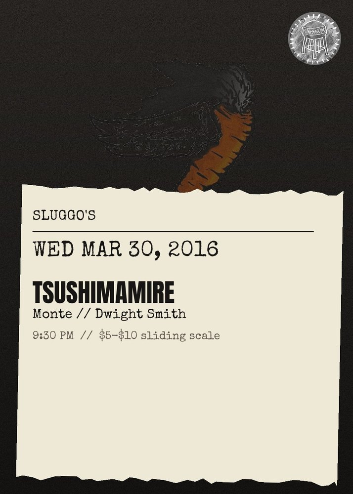

Tsushimamire, Monte, Dwight Smith
All Ages \/ $5-$10 Sliding Scale\n\nAlthough tsushimamire sounds like a Japanese word, it is not. It is a combination of Tsushima (the family name of bassist Yayoi) with \"Ma\" (from guitarist\/vocalist Mari) and \"Mi\" (from drummer Mizue). In addition, mamire means \"mixed up\" in Japanese: thus the effect is that of \"Tsushima (Yayoi), Mari and Mizue all mixed together.\"\n\nSome of their most powerful songs address death and its inevitability. In Na-mellow (Nameru), the singer plays the role of the young daughter of a fisherman, who gradually realizes her father will never return from a fishing voyage. In Manhole, the singer speculates about where manholes in the street might lead to, perhaps to the land of the dead.\n\nTSMMR:\nhttps:\/\/www.youtube.com\/watch?v=603FkEnMBOw\n\nWe Are the Asteroid:\nhttps:\/\/www.youtube.com\/watch?v=V1jZJpo4HQU\n\nMonte : \nhttp:\/\/www.punctumrecords.com\/monte\/\n\nDwight Smith : http:\/\/dwightsmith.us\/